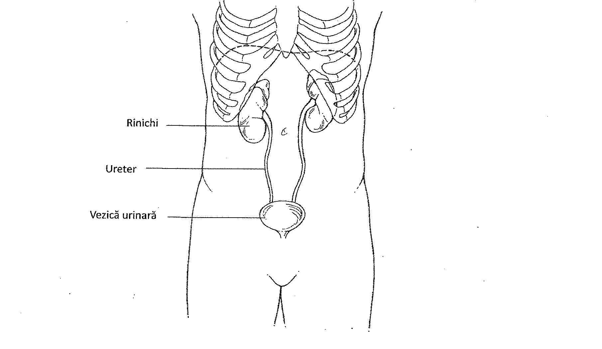
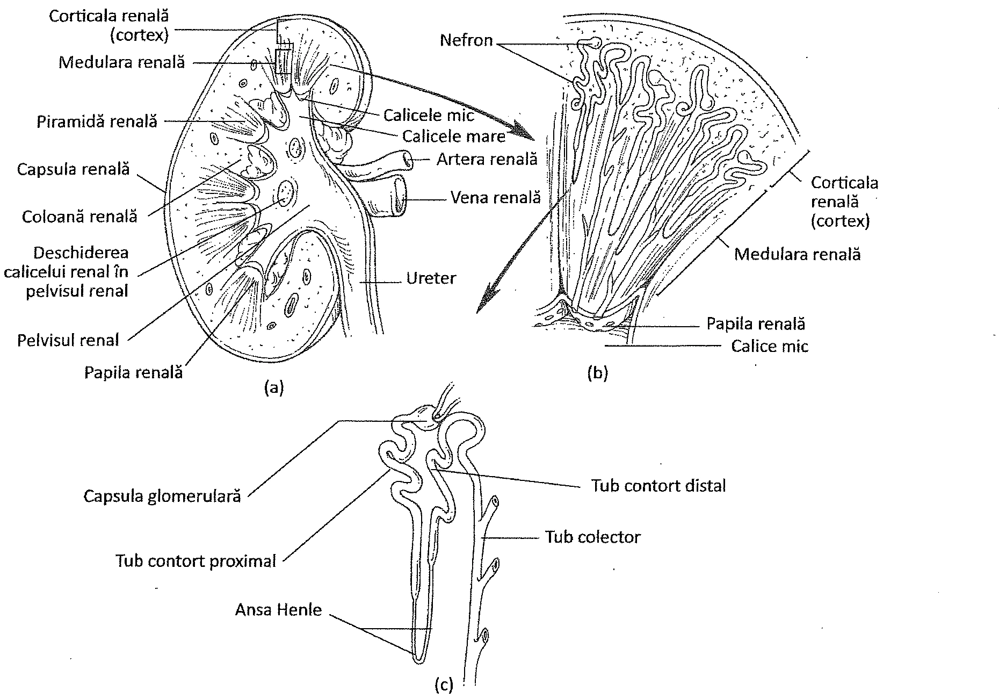
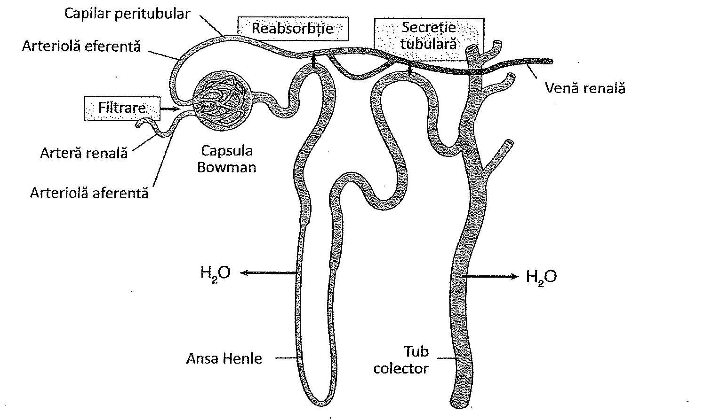
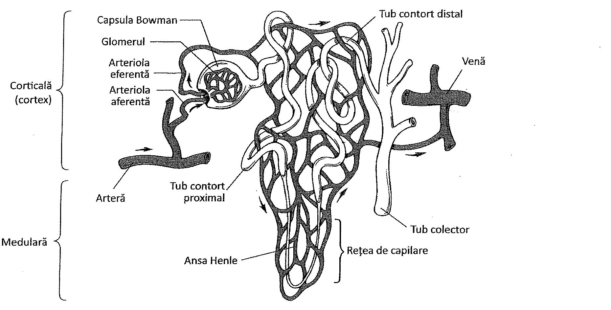
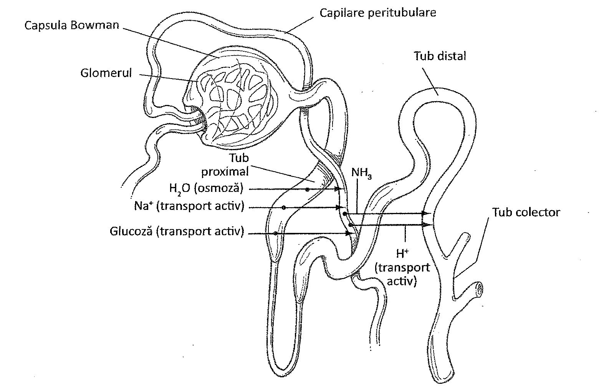
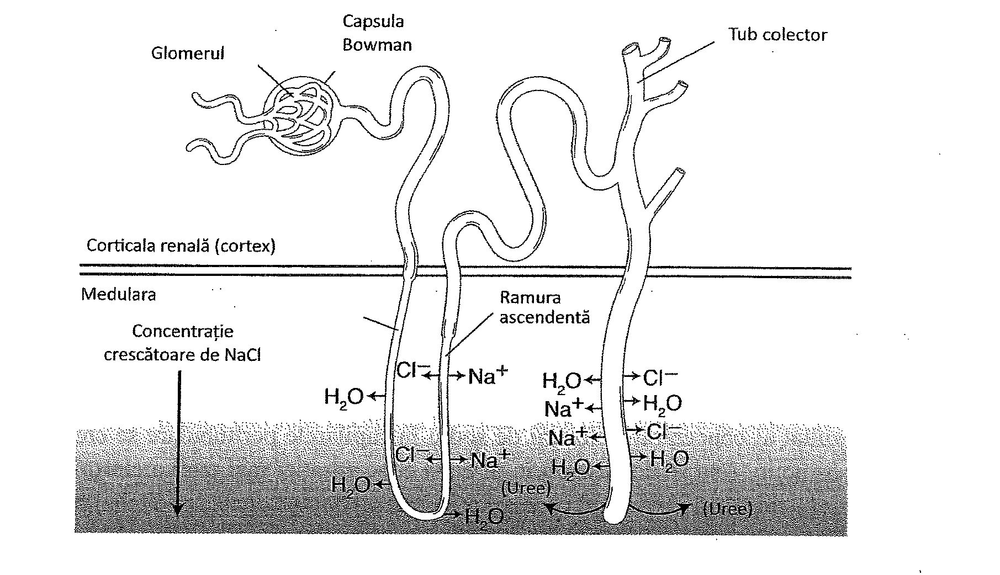
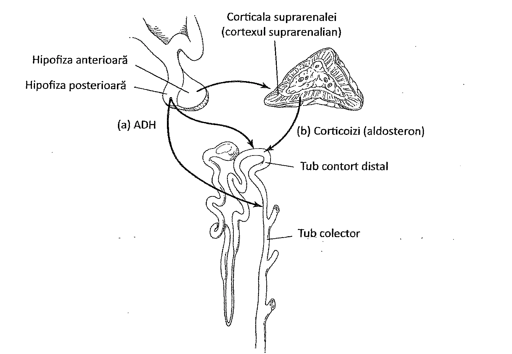
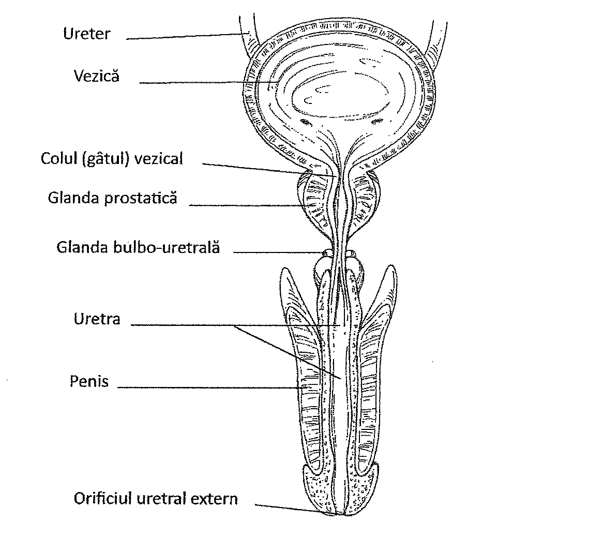
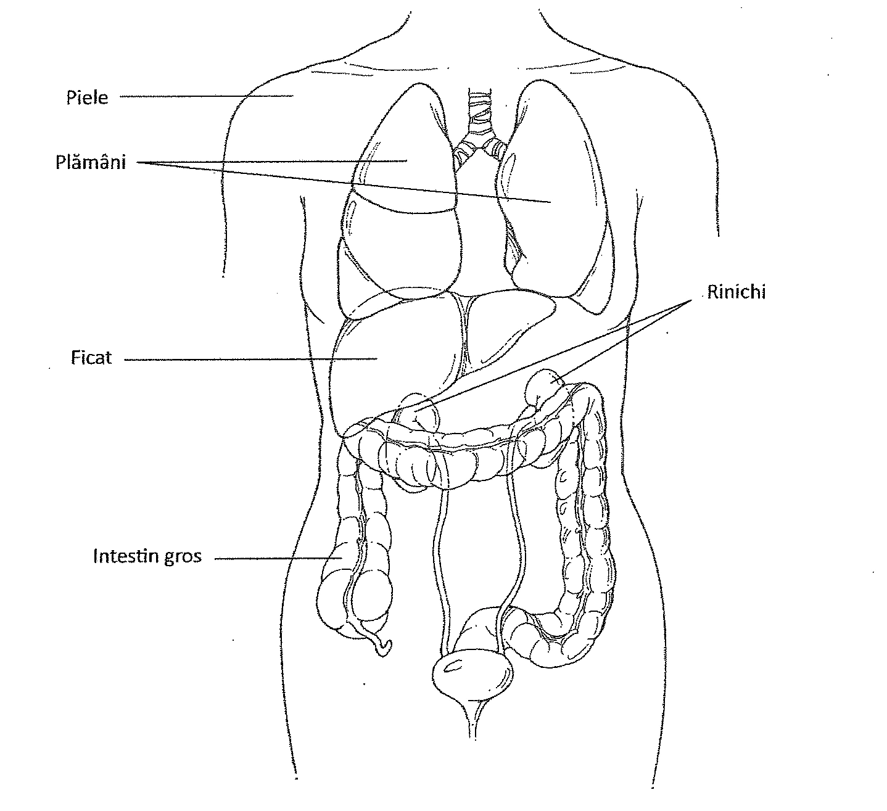

20. Sistemul urinar
Cuprinsul capitolului
- Rinichii și formarea urinei
- Compoziția urinei
- Ureterele, vezica urinară și uretra
- Alte organe excretorii
20. Rinichii
Funcția primară a sistemului urinar este de a regla compoziția și concentrația lichidelor extracelulare, ce înconjoară celulele. Aceste lichide, cunoscute sub denumirea de lichid interstițial, sunt plasma și fluidele tisulare. Sistemul urinar își realizează funcția prin formarea urinei din plasma sanguină, la nivelul rinichiului și a altor organe asociate.
În procesul formării urinei, rinichii îndeplinesc numeroase funcții: reglează volumul plasmei sanguine și, astfel, contribuie la reglarea presiunii sanguine, controlează concentrația produșilor de degradare din sânge, reglează concentrația electroliților plasmatici (inclusiv a ionilor de sodiu, potasiu, carbonați și bicarbonați), și contribuie la menținerea echilibrului acido-bazic din plasmă (pH-ul).
RINICHII
Rinichii sunt localizați pe peretele abdominal posterior, în afara peritoneului (retroperitoneal). Ei se află lateral de coloana vertebrală și sunt susținuți în poziție de către țesutul adipos și conjunctiv (Figura 20.1). La adult, fiecare rinichi cântărește în medie 175 de grame și este aproximativ de mărimea unui pumn.
La exterior, rinichiul prezintă o depresiune concavă pe suprafața medială, numită hil, și este învelit de o capsulă formată din țesut fibros de culoare albicioasă. Fiecare rinichi eliberează urina formată într-un organ cavitar cunoscut sub numele de pelvis renal. Din pelvisul renal, urina este condusă printr-un tub lung, numit ureter. Din ureter, urina se varsă în vezica urinară.

O secțiune frontală prin rinichi evidențiază două regiuni distincte: o regiune externă numită cortex (corticala renală) și o regiune profundă numită medulară (Figura 20.2). Medulara renală este compusă din numeroase formațiuni triunghiulare, numite piramide renale, printre care se află prelungiri ale corticalei renale, numite coloane renale. Vârful fiecărei piramide renale se deschide într-o cavitate mică, numită calicele mic. Câteva calice mici se unesc pentru a forma un calice mare. Calicele mari converg în pelvisul renal, o structură în formă de pâlnie.

NEFRONUL
Nefronul este unitatea funcțională a rinichiului și structura la nivelul căreia se formează urina. Fiecare rinichi conține mai mult de un milion de nefroni. Un nefron se compune din vase mici, care transportă sânge, și un set de tubi care transportă un fluid, filtratul, derivat din plasmă și obținut prin filtrare glomerulară. Filtratul intră în tubi, unde este modificat prin reabsorbția substanțelor necesare organismului și excreția celor inutile (Figura 20.3). Filtratul obținut în urma acestor modificări este urina.
Sângele arterial pătrunde în rinichi prin artera renală. Această arteră se divide apoi în artere mai mici, care trec prin medulara renală. Arterele mici dau naștere la artere și mai mici, care pătrund în cortexul renal. Acestea din urmă se divid în numeroase arteriole aferente vizibile doar microscopic.

20. Structura și fiziologia nefronului
STRUCTURA NEFRONULUI
Arteriolele aferente microscopice se termină într-o rețea de capilare numită glomerul. Fiecare nefron prezintă un glomerul. La nivelul glomerulului, plasma sanguină trece prin pereții permeabili ai capsulei glomerulare (Bowman) (Tabelul 20.1). Sângele va părăsi glomerulul renal prin intermediul arteriolei eferente. Arteriola eferentă formează, apoi, o rețea de capilare numită rețeaua capilarelor peritubulare. Acestea sunt dispuse în jurul tubilor nefronului, aspect care va fi discutat în paragraful următor. Ulterior capilarele peritubulare drenează în vene mici, care apoi se unesc pentru a forma vene mai mari. Venele mai mari formează în cele din urmă vena renală, care drenează sângele din rinichi.
Un nefron este alcătuit din mai multe structuri: capsula, ce înconjoară glomerulul, tubul contort proximal, ramura descendentă a ansei Henle, ansa Henle, ramura ascendentă a ansei Henle și tubul contort distal.
Capsula ce înconjoară glomerulul este numită capsula Bowman, cunoscută de asemenea și sub numele de capsula glomerulară. Aceasta se poate asemăna cu un balon care la un capăt este împins cu pumnul spre interior, astfel încât balonul să înconjoare pumnul. Pumnul reprezintă glomerulul; balonul reprezintă capsula Bowman.
| Structura nefronului | Fiziologia |
|---|---|
| Glomerulul și capsula glomerulară | Filtrarea plasmei sanguine |
| Tubii proximali | Reabsorbția prin transport activ a ionilor de sodiu, a altor ioni, a glucozei și a aminoacizilor; reabsorbția ionilor de clor prin difuziune facilitată; reabsorbția apei prin osmoză |
| Ansa Henle — Ramura descendentă | Intrarea ionilor de sodiu prin difuziune facilitată |
| Ansa Henle — Ramura ascendentă | Reabsorbția clorurii de sodiu prin transport activ |
| Tubii distali | Reabsorbția selectivă a ionilor prin transport activ; reabsorbția apei prin osmoză, sub influența ADH-ului; secreția amoniacului, a anumitor ioni, medicamente, hormoni și alte substanțe |
FILTRAREA
Fluidul provenit din plasma sanguină intră în capsula glomerulară prin fante submicroscopice (Figura 20.4). Substanțele dizolvate, formate din molecule mici, trec din capilarele glomerulare în capsula glomerulară printr-un proces numit filtrare. Filtrarea apare deoarece permeabilitatea capilarelor glomerulare este mai mare decât a altor capilare din corp și deoarece presiunea sanguină în glomerul este mai mare decât în alte capilare. Presiunea sanguină mai mare apare deoarece arteriola eferentă are un diametru mai mic decât arteriola aferentă. Celulele sanguine și moleculele mari, cum sunt proteinele, rămân în sânge, în timp ce ionii și moleculele mai mici, precum glucoza, ajung în filtrat.
Prin glomerulii nefronilor renali se filtrează aproximativ 7,5 litri de plasmă sanguină pe oră. Fluidul care trece în interiorul capsulei glomerulare este numit filtrat glomerular. La bărbați, rata de filtrare glomerulară este de aproximativ 125 de mililitri pe minut (ml/min) și în jur de 105 ml/min la femei.
REABSORBȚIA
Filtratul glomerular părăsește capsula glomerulară și trece în lumenul tubului contort proximal. Pereții tubului conțin milioane de microvilozități, cu rolul de a mări foarte mult suprafața de contact cu conținutul lumenului. Reabsorbția are loc la nivelul acestui tub contort proximal. În timpul reabsorbției, prin celulele epiteliale tubulare sunt transportate din lumenul tubului în capilarele peritubulare, cantități variabile de apă, săruri și alte molecule.

Transportul moleculelor este, în general, efectuat de transportori membranari specifici și, de aceea, transportul este selectiv. Reabsorbția glucozei și a aminoacizilor se realizează prin transport activ, un proces în care ATP-ul este utilizat ca sursă de energie. Proteinele transportoare specifice din membranele celulare transportă substanțele în afara celulelor tubulare, transferându-le apoi în sângele capilarelor peritubulare (Figura 20.5).
REABSORBȚIA SĂRURILOR ȘI A APEI
Reabsorbția sărurilor și a apei din tubul proximal se face printr-un mecanism diferit. Mai întâi, ionii de sodiu sunt transportați activ din fluidul tubului proximal în capilarele peritubulare. Transportul ionilor de sodiu încărcați electric pozitiv creează o diferență de sarcină electrică de-o parte și de alta a peretelui tubului, deoarece aceștia se acumulează în capilarele peritubulare. Acest gradient electric stimulează transportul facilitat al ionilor de clor din filtratul glomerular spre concentrația mai mare a ionilor de sodiu din capilarele peritubulare. Ionii de clor părăsesc filtratul glomerular, urmând ionii de sodiu.

Ca rezultat al concentrării clorurii de sodiu în capilarele peritubulare se creează un gradient osmotic. Apa se deplasează în direcția concentrației mai mari a clorurii de sodiu, pe care o diluează până când concentrația clorurii devine egală între tubul proximal și capilarele peritubulare. Cu alte cuvinte, clorura de sodiu atrage moleculele de apă.
Ca rezultat al reabsorbției pasive și selective din tubii proximali, cea mai mare parte a apei, nutrienților, sărurilor și ionilor necesari organismului sunt preluați înapoi în sânge. Componenții filtratului care nu sunt reabsorbiți sunt în mare parte deșeurile azotate produse de către corp, precum și o parte din apă, ioni și săruri.
Filtratul glomerular pătrunde apoi în ramura descendentă a ansei Henle. Ramura descendentă coboară spre profunzimea medularei, unde se găsește ansa propriu-zisă. Apoi, fluidul intră în ramura ascendentă, care urcă din medulară înapoi către corticală. În ramura ascendentă, ionii de sodiu și clor ies din tubi și se acumulează în interstițiul medularei (țesuturile din jurul tubilor).
Acumularea de sare în interstițiu determină hipertonicitatea acestuia și crearea unui gradient osmotic; astfel, în regiunea descendentă a ansei, atrasă de clorura de sodiu, apa trece din filtrat în interstițiu (Figura 20.6). În cele din urmă, apa se reîntoarce în circulația sanguină prin capilarele din apropiere și prin vasele limfatice. Concentrația clorurii de sodiu crește către profunzimea medularei, ceea ce face posibil ca moleculele de apă să continue să părăsească ramura descendentă a ansei dinspre porțiunea proximală spre cea distală, precum și vârful ansei Henle. Din ramura ascendentă a ansei Henle și din tubul distal apa nu este reabsorbită deloc, sau doar în cantități foarte mici, deoarece acești tubi sunt impermeabili pentru apă; ei permit, în schimb, reabsorbția ionilor de sodiu și clor. Acest mecanism se numește mecanismul contracurent.
Se pare că anumite deșeuri azotate, în special un compus numit uree, părăsesc lumenul tubului colector în porțiunea lui profundă. Acumularea ureei în profunzimea medularei contribuie la creșterea concentrației moleculelor organice din medulară. În cele din urmă, ureea trece înapoi în ansa Henle, de unde trece înapoi în tubul colector. Procesele care au loc în ansa Henle contribuie la înlăturarea apei din tubi și la reîntoarcerea ei în circulație prin capilarele peritubulare. De asemenea, garantează faptul că fluidul care rămâne în nefron va fi concentrat și va deveni urină.

Filtratul glomerular intră apoi în tubul contort distal, unde se continuă unele procese începute în tubul proximal. Din nou, apa și sarea sunt absorbite în sânge. Ionii de sodiu sunt preluați din fluidul tubular prin transport activ, ionii de clor îi urmează, iar apa urmează sarea în mod pasiv.
SECREȚIA TUBULARĂ
În tubii distali are loc un alt proces, numit secreție tubulară (Tabelul 20.2). Secreția tubulară este un proces activ, în care compușii chimici sunt transportați din capilarele peritubulare (din sânge) în tubul contort distal (în filtratul glomerular). Printre moleculele secretate în acest mod sunt acidul uric, creatinina, ionii de hidrogen, amoniac și antibiotice precum penicilina.
Consecutiv proceselor ce au loc în tubul contort distal, filtratul glomerular devine urină. Urina intră apoi în tubul colector. Tubul colector coboară în medulara renală în drumul său spre pelvisul renal și întâlnește mediul salin din interstițiul medular. Din cauză că acest mediu este hiperton, apa este extrasă din tubii colectori, prin osmoză. Apa este apoi transportată de către capilare și vase limfatice înapoi în circulația sanguină generală. Acest proces finalizează întoarcerea apei în sânge.
| Activitate | Rezultat | Locație |
|---|---|---|
| Filtrarea | Forțează apa și moleculele mici din plasmă să treacă din vasele de sânge glomerulare în tubul nefronului | Glomerulul și capsula glomerulară |
| Reabsorbția selectivă | Recuperează nutrienți, săruri și apă din lichidul tubului proximal și distal. Transportă substanțe în capilarele peritubulare pentru a le întoarce în curentul sanguin | Tubul contort proximal; ansa Henle; tubul contort distal |
| Secreția tubulară | Excretă moleculele din capilarele peritubulare în tubii nefronului; schimbă concentrația ionilor pentru a menține homeostazia sângelui | Tubul contort distal; tubul colector |
| Excreția | Elimină urina din tubul colector în pelvisul renal; transportă urina la uretere, apoi la vezica urinară, uretră și în exteriorul organismului | Tubul colector, pelvisul renal și organele accesorii ale excreției: uretere, vezica urinară și uretra |
20. Activitatea hormonală și urina
ACTIVITATEA HORMONALĂ
Rata reabsorbției apei din tubul contort distal și tubul colector este determinată de permeabilitatea membranei celulelor ce formează peretele tubului colector. Această permeabilitate este controlată de un hormon numit hormon antidiuretic (ADH). Printr-un mecanism chimic complex, ADH-ul deschide porii din membranele celulare și permite apei să treacă (Figura 20.7). Hormonul este produs de neuroni din hipotalamus și eliberat de către lobul posterior al glandei hipofize (Capitolul 13).
Secreția de ADH este stimulată când receptorii chimici din hipotalamus sunt stimulați de variațiile concentrației sodiului sau al altor ioni în sânge. Spre exemplu, în caz de deshidratare, concentrația ionilor crește și receptorii semnalizează hipotalamusului să elibereze ADH. ADH-ul crește permeabilitatea membranei celulelor din peretele tubilor și, astfel, este absorbită mai multă apă din filtratul glomerular. În caz contrar, când există un exces de apă în organism, concentrația ionilor scade. Receptorii detectează această scădere și inhibă secreția de ADH; astfel, în tubi este reabsorbită mai puțină apă, ea rămânând să dilueze urina. Procesul implică, de asemenea, renina și un sistem cunoscut sub numele de sistem renină-angiotensină, subiect detaliat în Capitolul 21.
Alt hormon cu rol în reglarea funcției renale este aldosteronul, secretat de către cortexul glandelor suprarenale. Hormonul acționează în principal asupra tubului contort distal, având trei efecte importante: stimulează reabsorbția ionilor de sodiu din tubul contort distal, stimulează reabsorbția apei, întrucât moleculele de apă „urmează" ionii de sodiu prin procesul de osmoză și stimulează secreția potasiului din sânge în fluidul tubului contort distal. Eliminarea potasiului prin secreție tubulară este principala metodă de înlăturare a acestuia din organism. Fără aldosteron, tot potasiul ar fi reabsorbit, iar excesul acestuia în organism poate duce la insuficiență cardiacă. O secreție insuficientă de aldosteron, apare și într-o afecțiune numită boala Addison.

URINA
Nefronii produc urina. Aproximativ 95% din urină este apă, iar 5% sunt substanțe solide precum deșeuri organice, ioni și săruri. Printre deșeurile organice se numără ureea. Ureea este un produs al metabolismului ficatului, obținut în timpul conversiei aminoacizilor în compuși furnizori de energie. În cursul conversiei, gruparea amino este înlăturată de pe un aminoacid și combinată cu o altă grupare amino și cu un atom de carbon și oxigen pentru a forma ureea, într-un proces denumit ciclul ornitinei (Capitolul 19). Ureea este toxică pentru celulele organismului și trebuie eliminată prin urină.
Alte substanțe din urină sunt amoniacul, acidul uric (din degradarea acizilor nucleici) și creatinina (un produs rezultat din utilizarea fosfocreatinei în celulele musculare). Ionii din urină sunt cationi (ioni cu sarcină pozitivă) precum sodiu, potasiu, magneziu, calciu, și anioni (ioni cu sarcină negativă) precum clorul, sulfații și fosfații.
Alte substanțe ce pot fi găsite în urină sunt corpii cetonici, substanțe ce rezultă din degradarea grăsimilor. Persoanele cu diabet zaharat pot avea un conținut crescut de corpi cetonici în urină, atunci când organismul folosește lipidele ca sursă principală de energie, în locul glucozei. Alte substanțe din urină depind de dietă și pot include pigmenți, hormoni și diferite medicamente.
Urina are, în mod obișnuit, o culoare galbenă sau o culoare chihlimbarie (asemănătoare cu a chihlimbarului) (Tabelul 20.3), datorată pigmenților derivați din substanțele prezente în dietă sau din bilirubina derivată din degradarea hemoglobinei globulelor roșii sanguine. Unul dintre pigmenții urinari importanți este urobilinogenul. Acest pigment este produs prin acțiunea bacteriilor asupra bilirubinei din intestin. Sistemul port hepatic transportă urobilinogenul la nivelul ficatului, apoi circulația sanguină aduce pigmentul la rinichi. Prezența globulelor roșii în urină, îi dau o culoare roșie; această situație este cauzată în general de o sângerare în sistemul urinar, o cauză posibilă fiind trecerea globulelor roșii prin pereții glomerulului renal, cum se întâmplă în unele boli renale.
Urina este de obicei clară și capătă un miros asemănător amoniacului dacă este stătută; pH-ul ei variază de la 4,6 la 8,0 cu o medie de 6,0 și depinde în special de dietă. Pe zi, se produc aproximativ 1-2 l de urină.
| Caracteristică | Descriere |
|---|---|
| Claritate | Transparentă sau clară; devine tulbure dacă este stătută |
| Densitate | 1015 până la 1020; mai ridicată dimineața |
| Culoare | De culoarea chihlimbarului sau galben pai; variază în funcție de dietă și de volumul de urină |
| Cantitate în 24 de ore | Aproximativ 1500 ml; variază în funcție de cantitatea de fluide ingerate, transpirație și alți factori |
| pH | Acid, dar poate fi alcalin dacă dieta conține cantități mari de vegetale; o dietă cu multe proteine crește aciditatea; urina stătută are o reacție alcalină datorită descompunerii ureei în compuși amoniacali; intervalul normal al pH-ului este de la 4,6 la 8,0 cu o medie în jur de 6,0 |
| Miros | Miros caracteristic de urină; urina stătută are miros amoniacal |
20. Structuri anexe și alte organe excretorii
STRUCTURI ANEXE
Sistemul urinar conține, pe lângă rinichi, și alte componente (structuri anexe). Ureterele sunt organe tubulare ce se întind de la rinichi la vezica urinară (Figura 20.8). Ele au o lungime de aproximativ 25-30 cm și transportă urina la vezică prin unde peristaltice produse de mușchii prezenți în pereții lor. Urina intră în vezica urinară sub formă de jeturi, care realizează un flux de 5 ml pe minut. La ieșirea din rinichi se află o formațiune bombată, numită pelvis renal, ce se continuă cu ureterul.
Alt organ al sistemului urinar este vezica urinară, ce se află poziționată posterior de simfiza pubiană. Vezica este un sac distensibil constând dintr-o mucoasă ce tapetează cavitatea și din pereți formați din fibre musculare netede. Este capabilă de o extensie considerabilă și are trei orificii: două spre uretere și unul către uretră. Vezica urinară poate acumula până la 600 ml de urină, pe care îi elimină prin uretră. Procesul de eliminare a urinei se numește micțiune. Micțiunea care se produce involuntar este numită inconținență.
Tubul care conduce urina de la baza vezicii la exterior este numit uretră. La femei, uretra este poziționată ventral față de vagin și are aproximativ 5 cm lungime. La bărbați, uretra trece prin penis și are aproximativ 15 cm lungime când penisul este relaxat. La bărbați, uretra servește de asemenea și ca pasaj pentru spermă. Tot la bărbați, uretra este înconjurată de glanda prostatică, iar creșterea în volum a acestei glande poate să împiedice curgerea normală a urinei. Deschiderea uretrei spre exteriorul corpului se face prin orificiul uretral extern.

ALTE ORGANE EXCRETORII
Pe lângă sistemul urinar, care excretă urină, în corp mai sunt și alte organe excretorii. Unul dintre ele este ficatul, care metabolizează produșii rezultați din degradarea hemoglobinei eritrocitelor și îi excretă ca și pigmenți biliari (Capitolul 18). O parte din pigmenții ce colorează urina provin de la ficat. Alte organe excretorii sunt plămânii. Aceștia excretă dioxidul de carbon și degajă o cantitate redusă de apă (Capitolul 17).
Intestinul și pielea sunt, de asemenea, considerate organe excretorii (Figura 20.9). Prin celulele epiteliale ce tapetează intestinul se pierd anumite săruri, cum ar fi sărurile de fier și de calciu, și se eliberează apă (Capitolul 18). (Defecația nu este considerată excreție, deoarece substanțele excretate sunt produși de degradare ai metabolismului. În procesul defecației sunt eliminate din corp materialele nedigerate.) Pielea (Capitolul 5) este, și ea, un organ excretor minor, pentru că excretă sudoarea în cursul transpirației. Sudoarea conține apă, precum și mici cantități de săruri și anumite cantități de amoniac, uree și acid uric. Transpirația este de fapt un proces de răcire, pentru că permite organismului să elimine excesul de căldură.

Procese fiziologice ce au loc în rinichi
| Activitate | Rezultat | Locație |
|---|---|---|
| Filtrarea | Forțează apa și moleculele mici din plasmă să treacă din vasele de sânge glomerulare în tubul nefronului | Glomerulul și capsula glomerulară |
| Reabsorbția selectivă | Recuperează nutrienți, săruri și apă din lichidul tubului proximal și distal. Transportă substanțe în capilarele peritubulare pentru a le întoarce în curentul sanguin | Tubul contort proximal; ansa Henle; tubul contort distal |
| Secreția tubulară | Excretă moleculele din capilarele peritubulare în tubii nefronului; schimbă concentrația ionilor pentru a menține homeostazia sângelui | Tubul contort distal; tubul colector |
| Excreția | Elimină urina din tubul colector în pelvisul renal; transportă urina la uretere, apoi la vezica urinară, uretră și în exteriorul organismului | Tubul colector, pelvisul renal și organele accesorii ale excreției: uretere, vezica urinară și uretra |